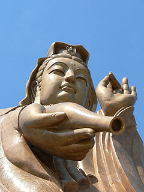

極楽寺その2
KekLokSiTemple；Penang
極楽寺の大観音は境内の一番高いところにあり、そこまでは小型ケーブルカーが運行している。
ちなみに運賃はこの寺の発展と維修の為に直接撥入されてるそうです。
チケットを買い、しばらく待つと小型ケーブルカーがやってきた。乗り込んでみるとガラス張りの快適な乗り物で、ケーブルカーというより斜めに上がるエレベーターみたいだった。観音様がグングン近付いて来る。と同時に屋根が重なりあう境内の様子を上から眺められる。
ケーブルカーが到着したのは羅漢堂という建物。ま、実質的には五百羅漢のレリーフが飾ってある土産屋なんですが。
外に出て振り返ると、あらビックリ。なぜか巨大な観音様の半身像が屋上に乗っかってました。
で、ホントの大観音はこちら。
ブロンズ製の大観音は2002年に開眼されたばかりの出来たてホヤホヤ（竣工は1997年）。湯気が出てそうなフレッシュ大観音である。
高さ約37メートル。アジアの大観音の標準的な高さだ。
なんでアジアの大観音はこの30メートル台の大観音像が多いのだろう？何か宗教的な意味があるのだろうか？
もしかしたら煩悩の数＝108から108尺（約33メートル）という高さを採用したという事なのかも。でも、なんで煩悩？
・・・でっかい観音様を建てたいという超煩悩だよ！
ま、最近は中国でも100メートル前後の大観音も造られたりしていて、脱30メートル時代に突入した観もあるが。
大観音は何故か徳利を傾けつつ、まずは御一献、てな感じ。

大観音の前にこんな写真付きの説明看板があった。
将来はこんな屋根を付けたいそうだ。で、寄付ヨロシク、といった内容の看板だった。
大観音の周辺には瓦が数多く積まれており一枚一枚に名前が書かれていた。ああ、これも寄付瓦かあ。
で、観音様の後ろにはさらに建物が造られていた。病院、学校、養老院だそうである。いやはや御見逸れ致しました。
大観音の台座の一画には扉があり、大いに気になった。
扉を開けると螺旋階段があって、上に登り覗き窓から外を見ようとしたら、窓がちょうど観音様の持っている徳利の穴で、落ちそうになったりして・・・なーんて事があるはずもなく、扉にはしっかり鍵がかかってました。
この大きさなので胎内巡りなどハナっから期待はしてないが、某ガイドブックにここの大観音は胎内巡りが出来るという記述があったもので少しだけ期待はしていたんです。でもそのガイド、ここの大観音が108メートルあるとか書いてあり（108尺の誤りか？）信憑性が低いので何とも言えないのだが。もしかして他の大観音と間違えてるのか？それとも妄想？もしかしたらかつては入れた、またはたまたま私がいった時だけ入れなかったのか。そうだとしたら物凄く悔しいぞ。
真相を御存じの方、教えて下さい。
ところで。
実はこの寺には以前、別の大観音があった。
その初代大観音は1974年に着工され1986年に完成した。素材はグラスファイバー製であったという。
しかし熱帯の気候と風雨にグラスファイバーは不向きだったようで、完成してからわずか3年後の1989年に壊れちゃったそうだ。
これが崩壊後の大観音の写真。
胸から下がごっそりと無くなっているのがおわかりいただけるだろうか。
この大観音崩落を受けてブロンズ製の二代目大観音が出来たという経緯を辿っていたのだ。
で、このグラスファイバー製の大観音、どこかで見たような気がしたのだが・・・
あああああっ！さっきの羅漢堂の屋上にいた半身の観音様じゃないっすか！
ということは残った部分を塗り替えて屋上に据えたのか〜！地球に優しい大観音リサイクル法！
グラスファイバー製で70年代に作られた大観音というのはかなり珍しい、というか画期的すぎる工法だと思われる。
その度を越した斬新すぎる工法が仇となり崩落してしまったのだが、20世紀大観音史を語る上でかなり重要な観音像であると思う。
そんな珍寺重要文化財級の観音像を下半身が壊れちゃったからと破棄せずに半身だけでも保存したその心意気、見事ですぞ。
大観音がある台座には大きな仁王様がいる。ここからはペナン一の高層ビル、コムターも良く見える。
で、再び小型ケーブルカーに乗って下に降りる。
本堂（大雄寳殿）や土産屋を経由し、五方佛殿へ。それにしても土産屋の多い寺である。
しかもかなりキテレツな佛グッズ満載なので中々先に進めないのが難点である。
電飾光背付きの仏像とかメチャメチャ欲しいが電圧とコンセントの形状が違い、日本では使えないので泣く泣く我慢する。
あ、五方佛殿でしたね。
ここからはまた別に入場料がかかる。実質的には萬佛寶塔の登頂料という事になろうか。
五方佛殿は横長の建物で、毘廬遮那仏を中心に左右に阿弥陀仏、成就仏、阿閃仏、寶生仏が横一列に並んでいる。
それぞれ中央と東西南北の守り佛だとか。
赤い字は壁に貼付けてあるのではなく一個一個天井から吊るしてある。これが実際の空間にテロップをインポーズしてあるみたいなインパクトがあった。
堂内は超ゴージャス。天井には透かし彫りの模様が施され柱は透かし彫りの龍が巻き付く石柱、左右の壁には様々なブッダストーリーのレリーフが施されていた。
堂内には参拝客はおらず、お経のCDを売っているおじさんがいるだけ。
暑くて少し疲れたのでお参りついでに堂内の端っこで少し休憩。石張りの床が気持ち良い。
・・・と、そのおじさんサービスのつもりなのかおもむろにお経のCDをかけ始めた。しかも次から次へとノンストップリミックス状態。
広い堂内の主役と化した激演歌サウンド系お経DJ。おじさん、カッコいいぞ。そういえばアメリカではキリスト教系ヒップホップとかが結構ヒットしているようだが、アジアでも仏教系ヒップホップとかあったら楽しいですね。あ、そーいえばシャクソン５っつーのがいましたね。全員住職のバンド。
で、ノリノリのおじさんを後目に五方佛殿を出る。おじさん、心なしか寂しそう。あ、もしかしてCD買って欲しかったのか？
佛殿の眼下は最初に入ってきたプチ公園。そして先程の無量壽塔が見える。
あ、無量壽塔の屋上に大きな仏像があったのか。しかも仏行列がまだ続いてらあ。
さて、極楽寺の最終ステージ、萬佛寶塔に向かおう。
この塔は1913年から建設が始まり、1927に完成したという力作だ。この寺の中でも比較的初期から建っている建物だ。
この建物は7層になっており、下層が中国様式、中層がタイ様式、上層がビルマ様式と何とも不思議な造形の仏塔になっている。
混合させるのではなくそのまま合体させるところが、ある意味ペナンを象徴しているかのような仏塔だ。
どの辺が中国様式、タイ様式、ビルマ様式なのかは説明するのが面倒なので御自身で御判断下さい。ま、こーゆーのは見た目のフィーリングですから。
塔の周囲は引きが無く全体像が撮れなかったので土産物で買ったミニチュア萬佛寶塔で御勘弁下さい。
ちなみに背景は旧正月のライトアップされた極楽寺の様子、の絵葉書です。エレクトリックブッダパレードですな。
で、塔の中に入る。塔の前にはお堂があり、そこから塔の中に入るようになっている。
では、早速お邪魔しま〜す。
塔は八角形の形状ゆえ屋内も八角の平面と2、3、4、6、7階にはその外側にテラスが付いていた。
↓1階↓
中央に金ピカの仏像が鎮座している。
で、その裏手にまわると階段がある。おっ、上に行けるですか、ウッシッシッ・・・
↓2階↓
三体仏が並んでいる。壁面には仏レリーフがびっしりと並んでいる。
やっぱ、1枚何百RM(=リンギット；マレーシアの通貨で1RMは約30円弱）とかで販売したのだろうか。
窓際にも仏像が置かれていた。
↓3階↓
2階とほぼ同じ間取りだが微妙に違う。壁のレリーフとか。
で、仏像はタイ様式に。
↓4階↓
外観的にはここからタイ様式になっているが、内部は基本的には変わらない。
ここは壁のレリーフがカラフルで強烈だ。中央ではビルマ風の寝釈迦さんが気持ち良さそうに昼寝している。
↓5階↓
外観のデザインによりこのフロアだけテラスが無い。中央には大理石で出来たビルマ仏が。そして壁面に見逃せないタイル画を発見！
こっ、これは銭湯で良く見るアノ山では・・・
↓6階↓
この階から上は平面が八角形から円形に変わる。ビルマ様式という事らしい。確かにパゴダを連想させる形だ。
その円状に並ぶ列柱の中に四角い部屋がある。玉仏（大理石仏）の後ろにはタイ様式と思われる寝釈迦が。
そしてここにも銭湯で見るアノ山のタイル絵が。しかも左右に。よっぽど気に入ったのだろうか、それとも中泰緬だけじゃ面白く無いから日本っぽいモノも入れちゃおうか、的な事なのだろうか？
とことんパターンの読めない配置である。ビルマフロアならビルマ仏でしょ、普通。しかもインテリアが丸窓とか使っていて何となく中国っぽいし。
これもまた大乗南方仏教大シャッフル現象の一端なのだろうか？
それとも何も考えてないのだろうか？私は後者に思えてしかたがないんすけど。
↓7階↓
ここも6階と同じく四角い部屋である。中国風の仏像が三体並んでいた。で、右側に少しだけ見えるアーチだが、その先にさらに階段があってもうひとつ上の階まで行けそうな様子だったが鍵がかかっていて行けなかった。
7階のテラスから身を乗り出して上の階を窺ったがそこは金色のパゴダ部分。窓が無い事から通常の部屋ではなく何か特殊な用途の部屋と考えられる。
もしかしたら物置きかもしれないのだが。
この塔の階段は折れ階段が連続しているカタチで、期待していたさざえ堂形式ではなかったが、上の階に行く程、床面積が狭くなってくる為、階段の取り付き方が結構無茶になっていて面白かった。
眼下には極楽寺の境内が見渡せる。密集した堂宇、微妙な高低差、それらが相まって立体迷路のような複雑な空間になっているのが見て取れる。
逆サイドには大観音と元大観音のツーショット。元大観音、裏側も塗り替えようじゃないか。
各階の窓は何故かイスラム風。そこに提灯が掛っていて不思議なビューを生み出している。
塔を降りると先程の入口と対になった出口がある。
もしかしたらかつてはここで入塔料を徴集していたのかも知れない。
そんなこんなで極楽寺ツアーもお終い。超御満悦アイテム満載の寺だった。
帰りは下りだったのと道順を把握していたので比較的楽に帰れた。
次のスポットへGO！
馬来半島珍寺伝説
珍寺大道場 HOME